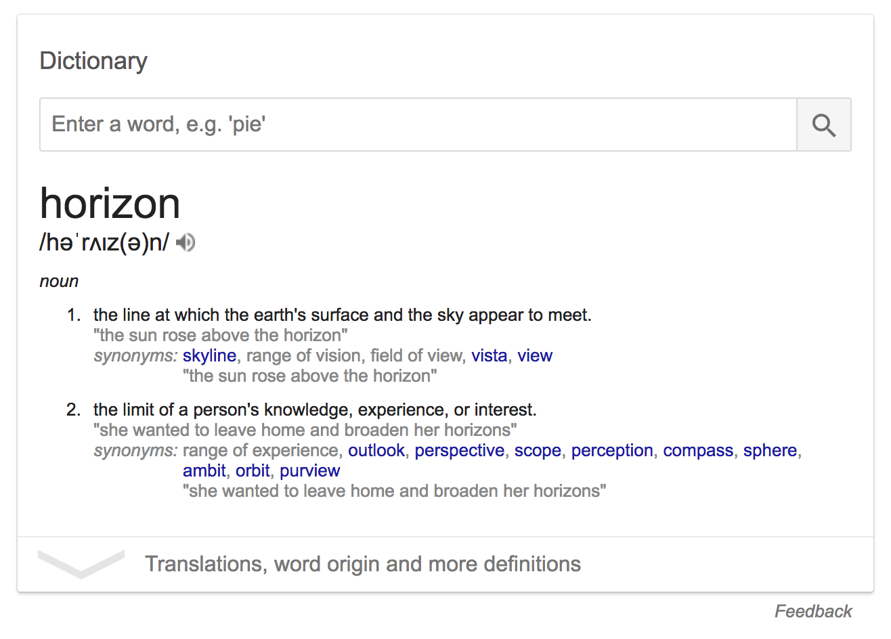
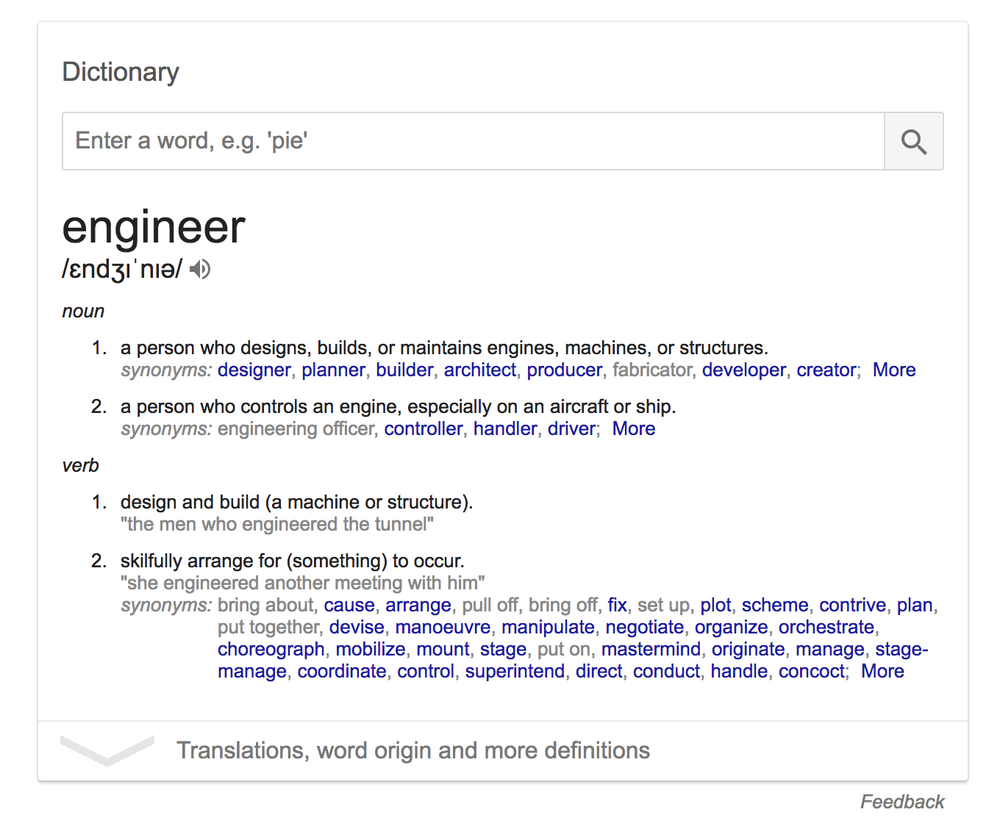

Horizons are 360 degrees
Broaden your horizons

The world is getting smaller
I used to be a developer
I am now a software engineer

I got skills
Everyday is match day
When do we train?
Maximize peak performance
Quick recap
- The world is getting smaller
- Everyday is match day
- When do we train?
Think about it for a second
Couple questions
Why?
Perspective
Time
Focus
Why?
Dopamine
Im not getting paid
How?
Do something impossible
- Create a programming language
- Make an operating system
- Design a database
Do something impossible
- Invent a strategy for problem solving
- Teach someone to do your job
- Optimize your human interactions
Expose yourself to knowledge
- Listen to podcasts
- Read blogs
- Watch TED talks
Narrow your horizons